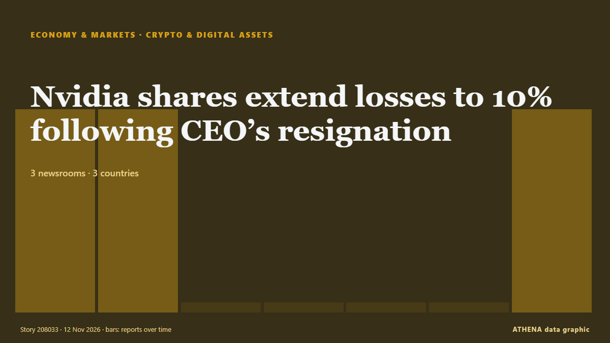

Οικονομία, Χρηματοοικονομικά & Αγορές
ΧορηγούμενοΠαρουσιάζεται από  Cybernetics and Artificial Intelligence Lab Welcome to the Cybernetics and Artificial Intelligence Laboratory, established at the Department of Business Administration of the National and Kapodistrian University of Athens. The lab is headed by Professor Dimitrios Thomakos. The lab aims to do research that can be published in top venues. Our research uses tools and methods of Artificial Intelligence, and lies in the following areas: - Forecasting - Decision making - Cyber security - Finance We are always looking forward to collaborating with exceptional students!
Cybernetics and Artificial Intelligence Lab Welcome to the Cybernetics and Artificial Intelligence Laboratory, established at the Department of Business Administration of the National and Kapodistrian University of Athens. The lab is headed by Professor Dimitrios Thomakos. The lab aims to do research that can be published in top venues. Our research uses tools and methods of Artificial Intelligence, and lies in the following areas: - Forecasting - Decision making - Cyber security - Finance We are always looking forward to collaborating with exceptional students!
Οι τίτλοι των ειδήσεων παρουσιάζονται στα αγγλικά, όπως δημοσιεύτηκαν.
Παρακολούθηση αγορών - επίσημα στοιχεία
Προς τα πού κινούνται τα επίσημα μεγέθη των αγορών - άνοδος, πτώση ή σταθερότητα - με την τελευταία επίσημη τιμή και την ημερομηνία της, και οι ειδήσεις αγορών που επιβεβαίωσε το ATHENA. Επίσημα στοιχεία, όχι τιμές σε πραγματικό χρόνο.
Ενέργεια
| 1 ημέρα | 1 εβδομάδα | 1 μήνας | Επίσημη τιμή | |
|---|---|---|---|---|
| Πετρέλαιο Brent | ▼ | ▼ | ▼ | $107,03/bblΕπίσημα στοιχεία της 3 Νοε 2026 |
| Πετρέλαιο WTI | ▼ | ▼ | ▲ | $99,64/bblΕπίσημα στοιχεία της 3 Νοε 2026 |
| Φυσικό αέριο ΗΠΑ (Henry Hub) | ▬ | ▲ | ▼ | $3,00/MMBtuΕπίσημα στοιχεία της 11 Νοε 2026 |
| Ευρωπαϊκό φυσικό αέριο (1 μήνας · 3 μήνες · 12 μήνες)(1Μ · 3Μ · 12Μ) | ▲ | ▲ | ▲ | $25,49/MMBtuΕπίσημα στοιχεία της 1 Σεπ 2026 |
| Άνθρακας (Αυστραλία) (1 μήνας · 3 μήνες · 12 μήνες)(1Μ · 3Μ · 12Μ) | ▲ | ▲ | ▲ | $153,84/tΕπίσημα στοιχεία της 1 Σεπ 2026 |
Τρόφιμα
| 1 μήνας | 3 μήνες | 12 μήνες | Επίσημη τιμή | |
|---|---|---|---|---|
| Σιτάρι | ▲ | ▲ | ▲ | $246,85/tΕπίσημα στοιχεία της 1 Σεπ 2026 |
Χρηματιστήρια ΗΠΑ
| 1 ημέρα | 1 εβδομάδα | 1 μήνας | Επίσημη τιμή | |
|---|---|---|---|---|
| S&P 500 | ▲ | ▼ | ▼ | Μόνο κατεύθυνση (δείκτης © Cboe)Επίσημα στοιχεία της 11 Νοε 2026 |
| Nasdaq Composite | ▲ | ▼ | ▼ | Μόνο κατεύθυνση (δείκτης © Cboe)Επίσημα στοιχεία της 11 Νοε 2026 |
Επιτόκια, κίνδυνος και δολάριο
| 1 ημέρα | 1 εβδομάδα | 1 μήνας | Επίσημη τιμή | |
|---|---|---|---|---|
| Απόδοση 10ετούς ομολόγου ΗΠΑ | ▲ | ▼ | ▼ | 4,88 %Επίσημα στοιχεία της 9 Νοε 2026 |
| Μεταβλητότητα αγοράς (VIX) | ▼ | ▲ | ▲ | Μόνο κατεύθυνση (δείκτης © Cboe)Επίσημα στοιχεία της 11 Νοε 2026 |
| Δολάριο ΗΠΑ, ευρύς δείκτης | ▲ | ▲ | ▲ | 121,88Επίσημα στοιχεία της 6 Νοε 2026 |
Το ευρώ έναντι άλλων νομισμάτων
| 1 ημέρα | 1 εβδομάδα | 1 μήνας | Επίσημη τιμή | |
|---|---|---|---|---|
| EUR/USD | ▼ | ▼ | ▼ | 1,1081 USDΕπίσημα στοιχεία της 12 Νοε 2026 |
| EUR/GBP | ▬ | ▲ | ▼ | 0,8359 GBPΕπίσημα στοιχεία της 12 Νοε 2026 |
| EUR/CHF | ▬ | ▲ | ▼ | 0,9232 CHFΕπίσημα στοιχεία της 12 Νοε 2026 |
| EUR/JPY | ▼ | ▼ | ▼ | 176,96 JPYΕπίσημα στοιχεία της 12 Νοε 2026 |
| EUR/CNY | ▼ | ▼ | ▼ | 7,3891 CNYΕπίσημα στοιχεία της 12 Νοε 2026 |
| EUR/TRY | ▼ | ▼ | ▲ | 55,691 TRYΕπίσημα στοιχεία της 12 Νοε 2026 |
| EUR/NOK | ▼ | ▲ | ▼ | 10,5630 NOKΕπίσημα στοιχεία της 12 Νοε 2026 |
Πηγές: Υπηρεσία Ενεργειακών Πληροφοριών ΗΠΑ (πετρέλαιο, φυσικό αέριο ΗΠΑ), ΔΝΤ (ευρωπαϊκό φυσικό αέριο, άνθρακας, σιτάρι), Υπουργείο Οικονομικών και Federal Reserve των ΗΠΑ (απόδοση 10ετούς, δείκτης δολαρίου) και Cboe (VIX), S&P Dow Jones Indices (S&P 500), Nasdaq (Nasdaq Composite), μέσω FRED (Federal Reserve Bank of St. Louis)· ισοτιμίες αναφοράς του ευρώ © Ευρωπαϊκή Κεντρική Τράπεζα. Οι τιμές είναι οι τελευταίες επίσημες, με την ημερομηνία τους - όχι τιμές σε πραγματικό χρόνο. Τις κατευθύνσεις τις υπολογίζει το ATHENA.
Κρυπτονομίσματα, ETF και μετοχές στις ειδήσεις
- Japan Tobacco shares tumble on fears of $8bn Russia loss Κίνδυνος 1.8 12 Νοε
- Nvidia shares extend losses to 10% following CEO’s resignation Κίνδυνος 4.2 12 Νοε
- Anthropic founders’ stakes are worth US$18 billion apiece at IPO price Κίνδυνος 0.0 12 Νοε
- Zimbabwe seeks entry into MSCI frontier markets index for dollar stocks Κίνδυνος 0.0 12 Νοε
- FirstFT: Anthropic bankers prepare to increase IPO valuation to $1.5tn Κίνδυνος 0.0 12 Νοε
- Rebounding AI stocks lift Wall Street Κίνδυνος 5.1 12 Νοε
- Griffin raises $20M to add cards and stablecoins to its banking platform Κίνδυνος 0.0 12 Νοε
- Binance hack reveals crypto's uphill battle against hackers Κίνδυνος 3.5 12 Νοε
- Morning Minute: Tokenized Stock Venues Are Launching Without Big Tech’s Approval Κίνδυνος 0.6 12 Νοε
- Seoul shares snap 2-day rally amid escalating Nvidia risks Κίνδυνος 3.2 12 Νοε

Κρυπτονομίσματα & ψηφιακά στοιχείαNvidia shares extend losses to 10% following CEO’s resignation
The stock closed the previous regular trading session at $173.73 per share. από TASS (English)
| 30 Οκτ | 115 |
|---|---|
| 31 Οκτ | 28 |
| 1 Νοε | 72 |
| 2 Νοε | 135 |
| 3 Νοε | 124 |
| 4 Νοε | 115 |
| 5 Νοε | 118 |
| 6 Νοε | 95 |
| 7 Νοε | 42 |
| 8 Νοε | 65 |
| 9 Νοε | 154 |
| 10 Νοε | 129 |
| 11 Νοε | 113 |
| 12 Νοε | 49 |
Rebounding AI stocks lift Wall Street
Wall Street is ticking higher Tuesday as stocks in the artificial-intelligence industry support the market, at least for now. από The Korea Times
Mortgage applications rise 6.2% as rates fall to 7.21%
Refinances rose 5% during the week but stayed 57% below year-ago levels. από HousingWire
Netherlands to Provide Naftogaz With €23M for Additional Gas Purchases
Ukraine’s gas conglomerate Naftogaz has signed a €23 million grant agreement with the European Bank for Reconstruction and Development (EBRD), with funding from the Dutch government. από Kyiv Post
Binance hack reveals crypto's uphill battle against hackers
An on-chain tally puts the suspected Binance drain at $5.57 billion across three blockchains, as Tether and Circle froze $1.8 billion. από Decrypt
Malaysia set to hold rates on strong growth, signal hike in 2027
Inflation in Malaysia remain moderate, despite a surge in global oil prices. από The Business Times
AI Powers UK Economic Growth In Third Quarter
The July-September reading for gross domestic product was an acceleration from 0.5 percent growth in the second quarter, the Office for National Statistics said in a statement. από Channels TV
Metro Bank up for sale after turnaround pays off
The high street lender – which has 78 branches across the UK – recently notched up the most profitable half-year in its history. από Evening Standard (London)
ANZ boss warns global markets in 'dangerous situation' as interest rates rise
ANZ boss Nuno Matos says he sees a "dangerous situation" of rising rates and frothy equity markets. από ABC News Australia
Treasury Secretary Scott Bessent moves into military housing due to Iranian threats
Treasury Secretary Scott Bessent has moved out of his home in Washington, D.C., and onto a military base out of concern for his safety, including Iranian threats to his life, officials said. από CBS News (World)
Pyes Pa fatal crash: Driver dies after vehicle crashes down bank
The Serious Crash Unit attended, and inquiries are underway. από New Zealand Herald
Blackstone plants new flag in Dubai as Gulf wealth draws Wall Street
World’s largest alternative asset manager opens new DIFC office as it steps up its pursuit of Gulf investors, with more than 40 regional distribution partnerships already in place. από Arabian Business
S&P 500, Nasdaq rise as CoreWeave results ease AI spending worries
The CBOE Volatility Index, Wall Street's fear gauge, fell for the fourth straight session after CoreWeave said it would become profitable in the first half of 2028. από Free Malaysia Today
UK economic growth expected to have picked up amid AI and defence drive
The Office for National Statistics was publishing the latest gross domestic product figures on Thursday. από The Irish News (Belfast)
Anthropic targets valuation of up to $1.4 trillion for blockbuster IPO
A visitor at Anthropic’s Code W/ Claude event in San Francisco, May 7, 2026. από The San Juan Daily Star
Israeli army, illegal settlers carry out over 1,180 arson attacks in occupied West Bank
Israeli settlers set fire to a scrapyard in the West Bank village of al-Lubban ash-Sharqiya, destroying over 100 vehicles and causing damages exceeding one million shekels. από Arab News
Qantas to outsource 850 local jobs with most roles moving to India
The Australian airline said the move was aimed at modernising its IT systems and noted the impact of AI. από BBC Business
Household Debts, Debt-to-Income Ratios, Delinquencies, Foreclosures, Collections & Bankruptcies in Q3 2026
US consumers are falling further behind on their debts as they navigate higher costs on fuel, groceries and other goods. από Livemint
Maserati to build branded residential island in Dubai’s World Islands with 840 homes
The Italian carmaker has partnered with the newly launched ultra-premium real estate brand of SAMANA Developers, to unveil Maserati Island. από Arabian Business
Japan services activity expands for fifth month: PMI
New orders increased for a 28th straight month. από The Business Times
From Madrid to Athens, Europe Takes to the Streets Over Housing
Tenants, homeowners facing foreclosure, students and workers are joining demonstrations in dozens of European cities, demanding stronger housing protections as soaring rents and evictions push more… από to vima
UK rates might need to fall far and fast in the future
Two tectonic shifts in the mortgage market are changing the way monetary policy works. από Financial Times - Global economy
Anthropic set for £970bn valuation in mega IPO
The Claude maker’s potential stock market listing is set to see it join the ranks of the world’s biggest IPOs. από Evening Standard (London)
Israel kills 14-year-old Palestinian boy in West Bank, wounds two others in Gaza
Red Crescent says troops blocked ambulance crews from reaching wounded person and detained 3 volunteer medics in Burqa. από Anadolu Agency (English)
James Bond Shocker: Robert Pattinson and Nicholas Hoult Late Contenders for 007 After Auditioning for Denis Villeneuve
As James Bond casting rumors heat up, a couple more A-list actors have entered the mix: Robert Pattinson and Nicholas Hoult were among the stars who screen-tested to play the new 007. από Variety
Elbasan marks 82nd anniversary of its liberation with tribute to 23 fallen partisans
Elbasan marked the 82nd anniversary of its liberation on Wednesday with a ceremony honouring fallen members of the 15th Assault Brigade. από Euronews Albania (EN)
FTC to fine 15 firms 1.62tr won for rigging govt. bond bids
South Korea's fair trade watchdog said Wednesday it has decided to impose 1.62 trillion won ($1.2 billion) in fines on 15 financial companies for colluding in government bond auctions for more than… από Korea Herald
S. Korea pledges $20 mil. to ADB fund for AI projects
South Korea has pledged to contribute $20 million to an Asian Development Bank (ADB) trust fund aimed at supporting artificial intelligence (AI) development projects, the finance ministry said… από The Korea Times
Dangote Cement shelves London listing, blames market conditions in blow to LSE
Dangote Cement may revisit London listing when market stability improves, person familiar with the matter says Shares remain listed on Nigerian exchange, with no disruption to business plans… από Club of Mozambique
Gold and silver prices rise on commodity markets
Gold and silver prices have risen on the COMEX commodity exchange in New York. από AzerNews
Singapore to launch gold vault service for foreign central banks
The Monetary Authority of Singapore said on Tuesday it would launch a vaulting service to hold bullion for foreign central banks and lower taxes on some gold-market companies as it competes for a… από MyJoyOnline
China's giant pandas make public debut at US zoo
The pair are to be hosted in the southern US facility for the next 10 years. από The Straits Times
US evacuates 13 military aircraft from second UK base as new Iran threat raises alarm
The US military evacuated aircraft from a second airbase in Britain on Monday after a threat from Iran, the Wall Street Journal reported, citing people familiar with the matter,... από Oman Observer
Interest Rate Hike Odds Rise—After October Inflation Exceeded Economists’ Expectations
With another month of higher numbers for consumer prices, it seems likely the Federal Reserve will raise interest rates in December. από Forbes Business
Claude chatbot maker set for $1.3tn stock market debut despite ‘catastrophic’ AI warning
The AI company behind the Claude chatbot will offer its shares at between $70 and $78, which is lower than what was expected. από BBC News